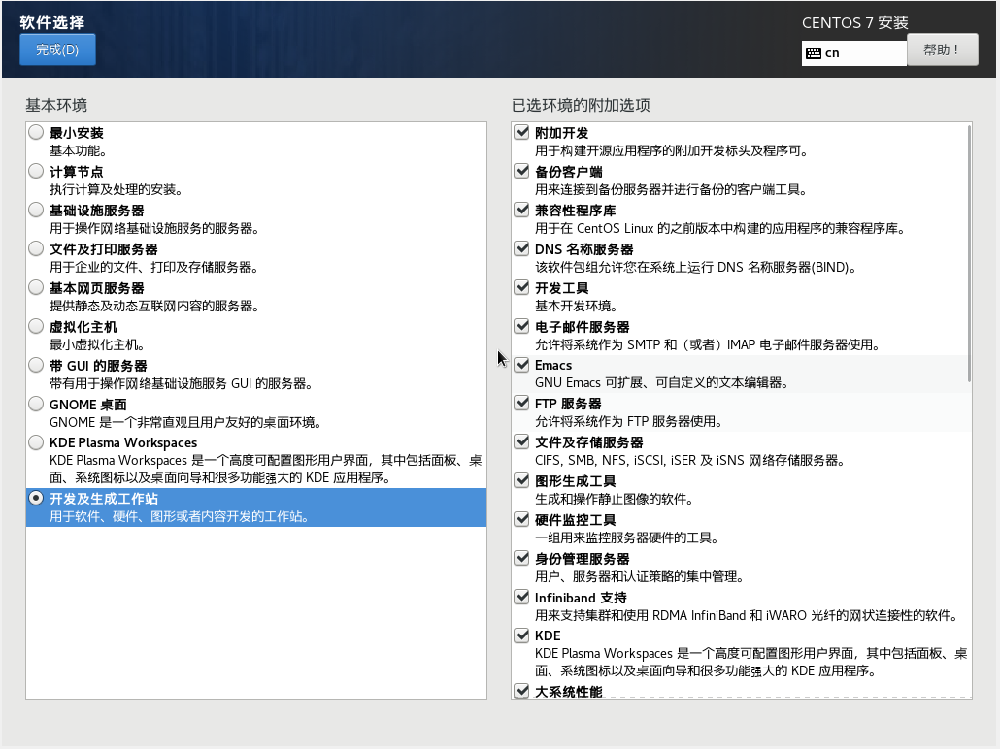

CentOS 7¶
这里介绍几个 LINUX 系统的配置。出于教学目的，我们还提供一个服务器供上课学生使用。
用户自行安装¶
关于 CentOS 的安装教程，百度上非常丰富，请读者自行百度。
需要特别说明，本教程为了减少安装 ROOT/GEANT4 等软件的依赖库问题，安装 CentOS 时软件选择 开发及生成工作站，同时选择右侧所有的附件选项。 如下图所示。
自动化配置脚本是在该安装选项基础上开发的，如若选择其它选项，可能造成某些软件安装缺少依赖库等问题。
按照以上步骤安装好系统之后，还需要对基础依赖工具做一些安装及升级，可以下载执行我们的自动化安装脚本。
- 升级 yum 源库（第一步）
- 软件安装脚本（第二步）